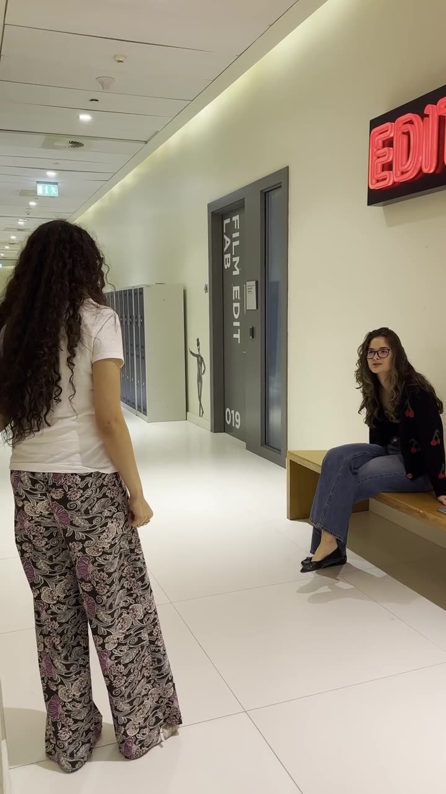
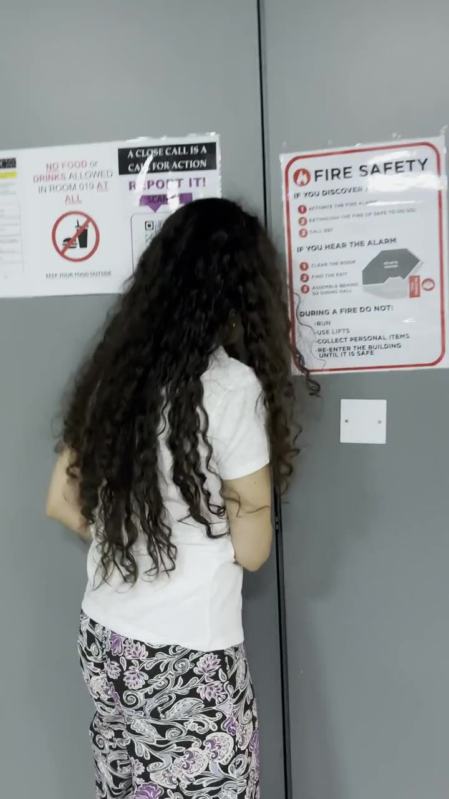
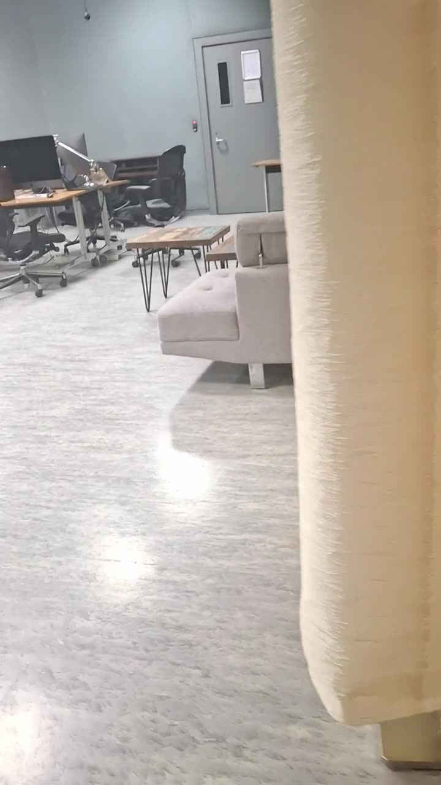

Everything recovered from the scene
It's dark in here — move your cursor to look around.



Investigator's note — 1 of 2
Every student on this campus has had the late-night version of this story: the long walk back through a building that looks unfamiliar with the lights half off, the moment you can't remember if a door locks automatically behind you. What we recovered suggests the subject noticed something in the corridor well before the last recording begins.
Investigator's note — 2 of 2
This isn't a case about a monster, or an intruder. It's a case about a very ordinary building that started to feel like it was paying attention to someone. That distinction matters for whoever reviews this file next.
- Dina
- Irma
- Mariam Alameri